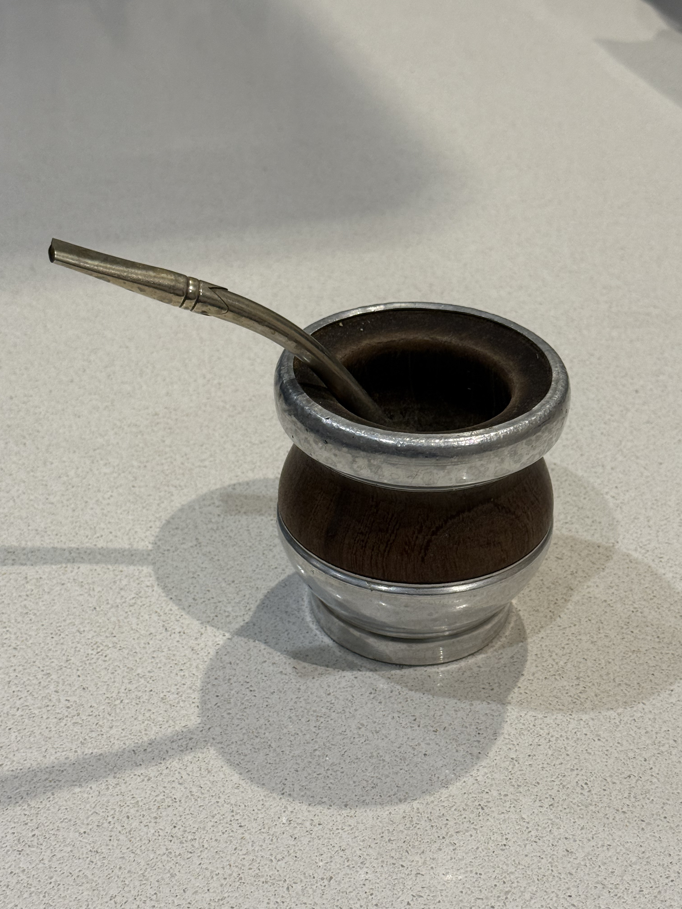
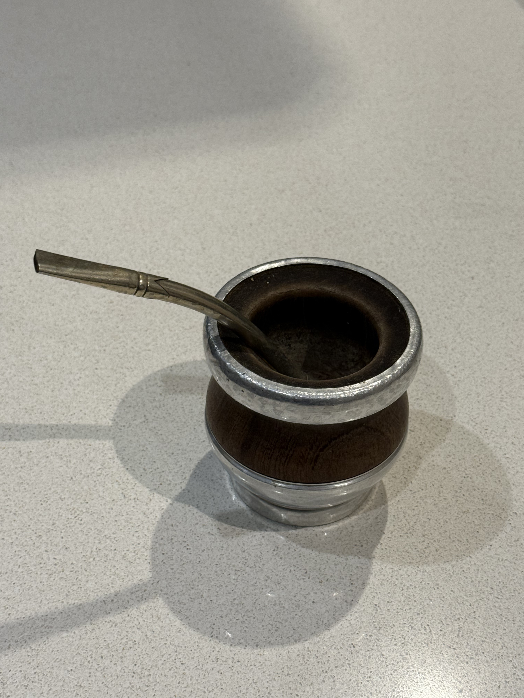
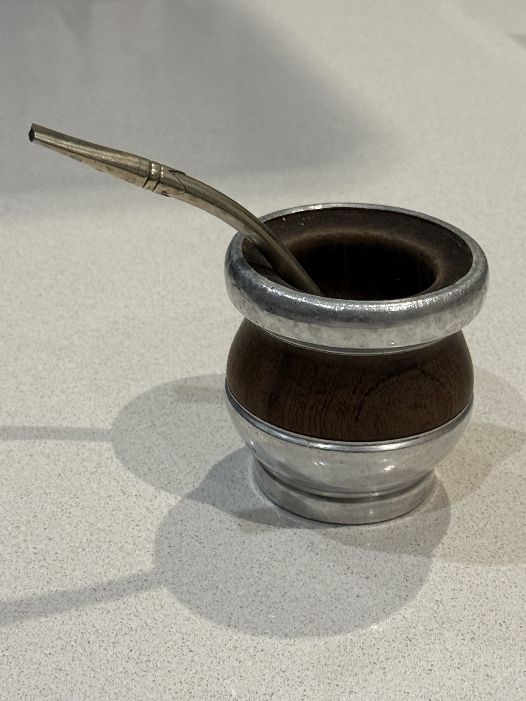

Mate tradicional de madera algarrobo

- Material: Madera algarrobo
- Tipo: Tradicional
- Estilo: Clásico
- Uso: Para compartir momentos con amigos o familia
Detalles y características
Este mate de madera algarrobo tiene un diseño clásico que refleja la tradición y la calidez de compartir un mate.
Su madera oscura y su forma tradicional lo hacen ideal para quienes buscan una experiencia auténtica al tomar mate.
Es perfecto para disfrutar en reuniones familiares o con amigos, creando momentos de conexión y conversación.
Este mate tradicional, más antiguo y de madera algarrobo, tiene una belleza serena que se siente apenas uno lo ve.
Su madera oscura y su estilo clásico transmiten historia, calidez y esa sensación de estar cerca de algo muy nuestro.
Dentro de mi colección ocupa un lugar especial, porque representa la tradición, el paso del tiempo y la simpleza hermosa de compartir un mate.

